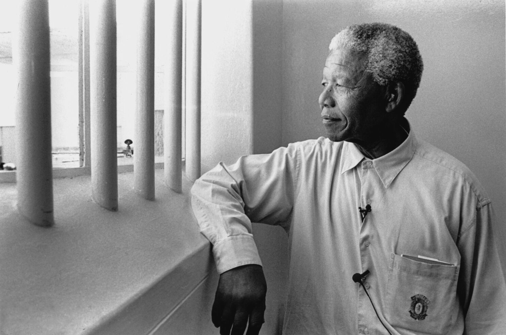
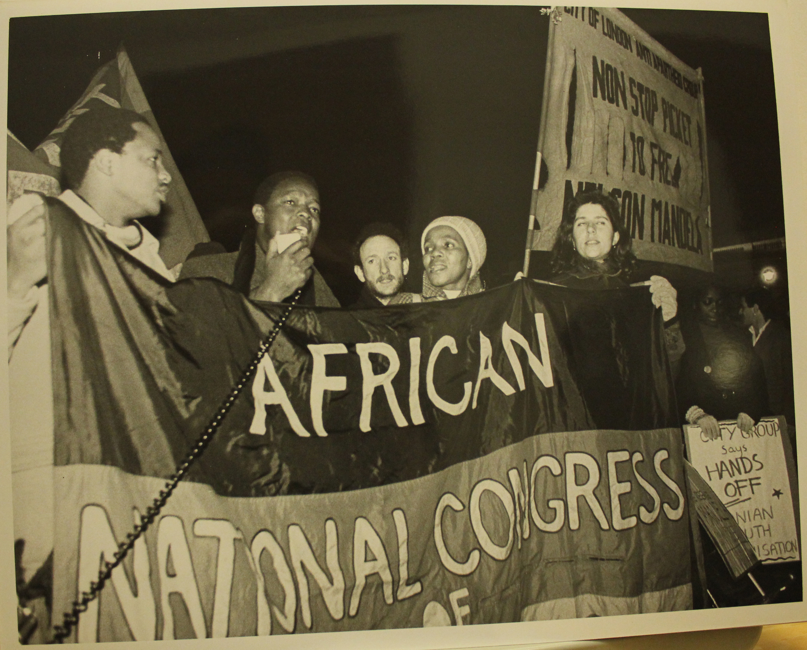
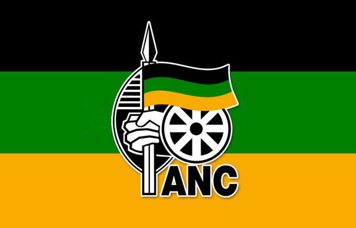

Mandela
Rolihlahla Mandela was born into the Madiba clan in the village of Mvezo, in Eastern Cape, on the 18th of July 1918. His father would die when he was 12, and not long after he would be sent to a primary boarding. At said school one of his teachers would give Rolihlahla the name Nelson , which was part of giving every school children a “Christian” name.
Finishing primary school, Mandela would go after his secondary education. Attending the University College of Fort Hare trying to go after and Art degree he would be quicked out due him being involved with a student protest. Going to two other universities again without completing it, Mandela would begin to enter to world of politics. Joining The African National Congress Youth Leage (ANCYL) in 1942. When he joined the youth league was looking to change the ANC. Changing the polite petitioning and adopting a more active approach, using boycotts, strikes, civil disobedience, and non-cooperation.
 As part of his efforts to fight against Aprthied Nelson opened a law firm that’s low cost meant to to give legal guidance to unrepresented black people. With every peaceful way they fight against Aprtheid being met with stricter and stricter laws a few of ANC members as well as Mandela would turn to violent measures. These actions would lead to his arrest along side many other ANC members. Mandela would be charges with treason and sent to Robben Island where he would live out most of his sentence.
Serving 18 out of his 27 years on Robben Island Mandela would be transferred after contracting tuberculosis. Moved to Victor Verster Prison where he spent 14 months of his sentence. Finally being released Febuary of 1990
On the 10th of May 1994, on his 80th birthday Mandela was inaugurated as South Africa’s president. True to his promise he would step down in 1999, but continued to do charity work with his foundation.
As part of his efforts to fight against Aprthied Nelson opened a law firm that’s low cost meant to to give legal guidance to unrepresented black people. With every peaceful way they fight against Aprtheid being met with stricter and stricter laws a few of ANC members as well as Mandela would turn to violent measures. These actions would lead to his arrest along side many other ANC members. Mandela would be charges with treason and sent to Robben Island where he would live out most of his sentence.
Serving 18 out of his 27 years on Robben Island Mandela would be transferred after contracting tuberculosis. Moved to Victor Verster Prison where he spent 14 months of his sentence. Finally being released Febuary of 1990
On the 10th of May 1994, on his 80th birthday Mandela was inaugurated as South Africa’s president. True to his promise he would step down in 1999, but continued to do charity work with his foundation.

The National African Congress
Starting in 1912 in Bloemfontein the founders of the ANC were a group of native black Africans and Indians to improve the status of non-whites in South Africa. When the South African government issued territorial segregation in 1913, the ANC would petition the British government to get involved to no success. The group would continue to petition while at the same time they began The African Congress Youth Leage(ANCYL). Recruiting people like Nelson Mandela, Oliver Tambo, and Walter Sisulu which would grow the ANC more, changing the tactics used, and challenging discrimintaion in different ways.
When Apartheid officially began ANC would start a defiance campaign which included women. The group would also create an Freedom Charter declaring that South Africa belongs the everyone no matter what race the person is. More extreme group then broke off of the ANC forming the Pan African Congress(PAC). The PAC would also declare that South Africa belongs to the black natives of the region.

It was after the Sharpsville Massacre where police fired on unarmed protestors and the government declared an state of emergency when the ANC was banned in the country. Of course just because the government made organization out lawed doesn’t mean the group disbanded. In the early sixties the group adopted a more violent apporch. With the increase adopting of violence the ANC formed a millitant wing Umkhonto we Sizwe. For the next years the group would commit sabotage and violence that led to the arrest of multiple key figures like Nelson Mandela. It was after Mandela’s trial where the Anc went more underground and adopted guerilla warfare tactics having bases in neighboring countries.
Decades later in the eighties ANC coordinated sabotage and guerilla attacks which led to South Africa and its western allies declared the group as an terrorist organization lauching attacks on the bases. Due to the attacks from the West most of ANC’s support came from Cuba and the Soviet Union. In 1990 the pressures from the international community made F. W. de Klerk reinstate ANC and released Mandela from prison. ANC being led by Mandela won the first democratic election in 1994.
